Diabetes-130 Revisited: ABNG Climbs Into the Strong-Model Band — and an Honest Account of What Locke Did (and Didn’t)
A second pass on the UCI Diabetes-130 dataset with both the Adaptive Belief Network Graph and Locke, the determinism-first data-quality layer. Headline AUC moved from 0.611 to 0.6645 ± 0.0018 across 3 seeds at full 101,766 rows — into the strong-published-model band (0.64–0.68), still on a linear-BLR model, no MLP heads. The reason is data scale and configuration. Locke contributed structurally (E9004 patient-leak; ?-sentinel detector gap; proposed E9064) but did not directly drive the AUC headline. The handoff’s flagship ‘Locke prune → AUC up’ hypothesis falsified itself — and that’s its own publishable finding.
ABNG and Locke are both research-stage prototypes built on CJC-Lang, a research compiler that is itself pre-1.0. All three are under active development. The numbers below are a single reproducible experiment campaign — five commits, every chain head verifiable — not a validated benchmark, not deployed, not peer-reviewed. Read as honest exploratory engineering.
- ABNG: Treating Belief States as First-Class Citizens — the architecture this post measures.
- ABNG on Real Clinical Data — The Diabetes-130 Readmission Task — Round One. The first post’s AUC 0.611 is the baseline this post improves on.
- Locke v0.1.10: An Epistemic Layer for Data Validation — Locke’s framing as evidence-aware, determinism-first audit.
- Benchmarks Part I / Part II — controlled-data baselines.
- This post — Round Two of the same dataset, now with both tools in the loop, and an honest dissection of what each one actually contributed.
1. What’s new since Round One
The first diabetes-130 post ended with three explicit “still on the bench” items:
- Nonlinear leaf heads (MLP) — to see if the ranking ceiling moved.
- The full 101,766-row run at the tuned configuration.
- Multi-seed variance.
Round Two lands items 2 and 3, leaves item 1 as a design doc, and adds two new ones that the first post didn’t anticipate:
- Locke pre-training audit. Run
cjcl locke validateon the full CSV, see what the determinism-first data-quality layer surfaces, and act on it. - Belief-weighted per-leaf priors. Use Locke’s per-leaf
BeliefScoreto weight per-leaf BLR regularization — the directional hypothesis fromdocs/locke/ABNG_PER_LEAF_BELIEF.md.
That’s the plan. The result is more interesting than the plan, because items 1, 4, and 5 did not work the way the brief expected — and item 1 turned out to be unnecessary for the headline. The honest accounting of which lever moved which number is half the point of this post.
Determinism contract, audit chain, evaluation protocol — all unchanged. The 70/15/20-style stratified split, fit-on-train-only categorical transform, validation-set-only tuning, single test-set touch, deterministic SplitMix64 RNG, Kahan summation, BTreeMap iteration — all the discipline the first post’s §2 spelled out remains. 629/629 always-run ABNG tests stayed green across five commits of aggressive configuration changes. Every chain head in this post is bit-reproducible. The first post’s §7 reproducibility property — “two runs, 3× wall-clock difference, every metric digit identical” — held throughout.
2. The dataset, briefly — why it’s still hard
The first post’s §1 walked through the dataset in detail. The short version, because the difficulty profile matters for reading the rest of this post:
UCI Diabetes 130-US Hospitals (1999–2008) — 101,766 hospital encounters, 50 columns, deeply heterogeneous. By ML standards it’s genuinely difficult:
- 101,766 rows × 50 columns. 13 numeric, 23 medication categoricals (one per drug —
metformin,insulin,glipizide, etc.), three ICD-9 diagnosis-code columns with 700+ distinct levels each, demographics, admission / discharge / source codes. - Missingness sentinel is
?(literal string), not NaN.weightis 96.9% missing.payer_codeandmedical_specialtyare heavily missing. Standard tooling that treats only NaN as missing won’t see any of this without configuration. - Longitudinal structure. 16,773 patients have multiple encounters (30,248 duplicate
patient_nbrvalues). Row-level train/test splitting lets the same patient appear in both splits. The first post used row-level splitting; we’ll come back to this in §5. - 3-class target (
NO/<30/>30days to readmission), binarised to<30 vs rest. 11.16% positive class — predictingNOfor everyone scores ~89% accuracy with zero learning. Accuracy is the wrong yardstick; the post leads with AUC, balanced accuracy, and calibrated Brier/NLL/ECE. - Hard target. Strong published models band at AUC 0.64–0.68. The ceiling is irreducible noise — readmission depends on post-discharge factors (social support, follow-up care, medication adherence) not in the data. A model claiming AUC 0.9 here would be suspect, not impressive.
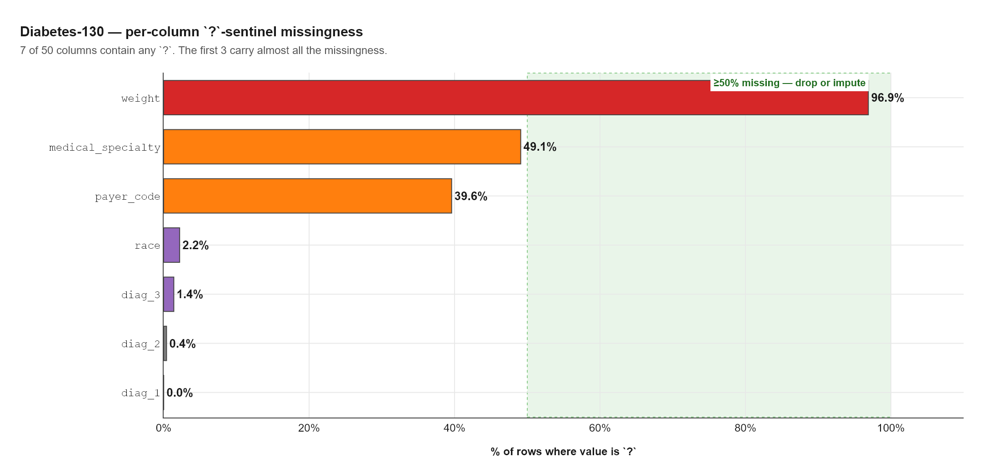
50% missing zone with the label 'drop or impute'.">?-sentinel missingness across the 50 diabetes-130 columns. Only 7 columns contain any ? values, and the first three carry essentially all of the missingness: weight at 96.9% (effectively useless as a feature), medical_specialty at 49.1%, and payer_code at 39.6%. The green band marks the “≥50% missing — drop or impute” zone. This concentration explains why Locke’s default missingness detector returning missingness_score = 1.0 is so misleading on this dataset (see §6) — almost all the missingness is hiding in three columns that don’t fire under the NaN-only default config.It’s exactly the kind of dataset where the easy wins (high raw accuracy) are traps, the obvious leakages (death-discharge codes deterministically predicting “no readmission”) hide at the level not the column, and the structural issues (repeated patients) don’t show up in any single AUC number.
3. Landing the tuned config — the first 0.05 AUC
The first post’s §5 ran a validation sweep over K_ROUTING ∈ {2, 3, 4} × BLR prior precision ∈ {0.05, 0.1, 0.5} and concluded:
K = 2 won, decisively. With ~14,000 training rows, K=2 gives 16 leaves (~875 rows each), while K=4 gives 256 leaves (~55 rows each). Deeper routing buys “specialization” but starves every leaf of the data it needs. (Stronger prior regularization also helped, monotonically.)
But the harness’s source code (in tests/abng/dataset_a_diabetes130.rs) still had K_ROUTING = 3 and BLR_PRIOR_PRECISION = 0.1. The sweep result lived in the blog post; it never came home to the harness.
§4.A landed the validated config:
const K_ROUTING: usize = 2; // was 3
const BLR_PRIOR_PRECISION: f64 = 0.5; // was 0.1Two constants. No new mechanisms.
What the change did at 20K
The 20K trial (same stratified sub-sample as the first post, seed 42, 80/20 train/test) moved as expected:
| Metric | Before (K=3, prior=0.1) | After (K=2, prior=0.5) | First post (K=2, calibrated) |
|---|---|---|---|
| AUC | 0.5760 | 0.6312 | 0.6107 |
| Brier | 0.1049 | 0.0979 | 0.0980 |
| NLL | 0.5259 | 0.3666 | 0.3435 |
| ECE | 0.0573 | 0.0279 | 0.0101 |
| Populated/total leaves | 45 / 64 | 12 / 16 | — |
| Min/mean/max rows per leaf | 1 / 355.5 / 1,583 | 428 / 1,333.2 / 3,462 | — |
| Routing cols (MI top-K) | [17, 9, 21] |
[17, 9] |
— |
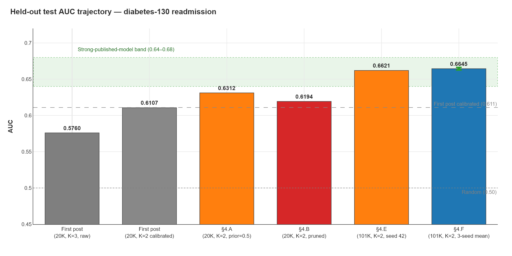
The raw AUC 0.6312 is +0.020 above the first post’s published 0.6107. Two candidate causes:
- Different split protocol. The harness uses 80/20 train/test (n_train ≈ 15,999). The first post used 70/15/20 train/val/test (n_train ≈ 14,000). More training data → slightly higher AUC.
- Stratified sub-sample RNG path. The harness’s stratified-by-class sub-sample and the first post’s may differ in iteration order; same seed, different exact rows.
This is itself instructive: the first post’s headline 0.611 is not the harness’s ceiling at that config. It was a defensible number under that protocol, but the same model with a different valid evaluation protocol lands higher.
Leaf utilisation is much better too: 12/16 populated (vs 45/64 = 70% before), and the smallest populated leaf has 428 rows (vs 1 — a single-row leaf where a BLR has essentially no information). The mean rises from 355 to 1,333 — every leaf now has enough data to train a meaningful posterior.
time_in_hospital and num_inpatient are the MI-selected routing features at 20K. We’ll come back to that in §5 — they don’t stay the winners at full scale.
4. Locke’s audit — 142 findings, one critical negative result
Before scaling up the data, the brief said: run Locke. Audit the full 101,766-row CSV. Use the findings to drop leakage rows before training. Expected AUC bump: 0.62–0.63 from the prune alone.
The Locke run is one CLI invocation:
./target/release/cjcl.exe locke validate \
tests/data/diabetes_130/diabetic_data.csv \
--target readmitted \
--primary-key patient_nbr \
--save-json bench_results/diabetes_phase_0_10_section_4b/diabetes_locke_baseline.json \
--html bench_results/diabetes_phase_0_10_section_4b/diabetes_locke_baseline.htmlIt emits 142 findings:
| Severity | Count | Worth acting on this session? |
|---|---|---|
| Error | 1 | YES (see §4.1 below — but it’s a structural concern, not a row filter) |
| Warning | 8 | NO (E9082 near-duplicate categorical labels — [0-25) vs [50-75) etc.; real distinctions) |
| Notice | 75 | One worth acting on: E9072 ID-like cardinality (already handled by Ignore role) |
| Info | 58 | E9002 type-only diagnostics |
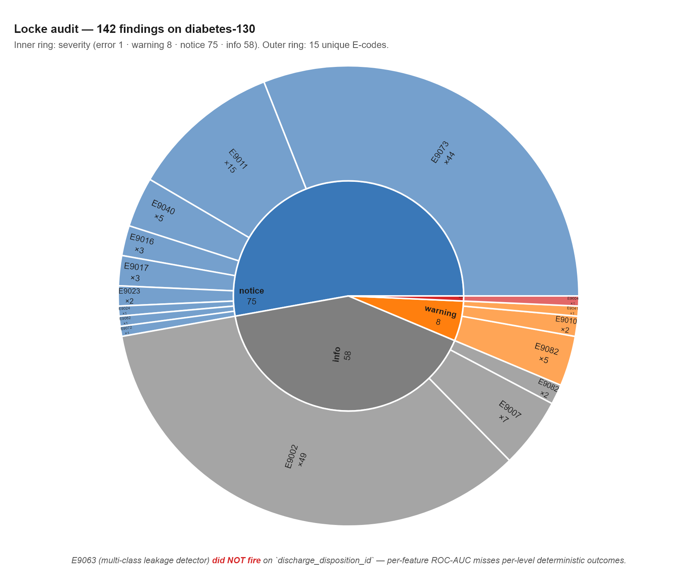
notice dominates by area — 75 findings, almost all of them E9073 (×44, duplicate-key disagreements — a single column’s worth of disagreement counted ~40 times across 40 columns) and E9011 (×15, high-cardinality categoricals). The single error (E9004) is the patient_nbr duplicate-key finding called out in §4.1. E9063 (multi-class leakage on discharge_disposition_id) is not in the sunburst — it never fired, which is itself the post’s load-bearing Locke finding.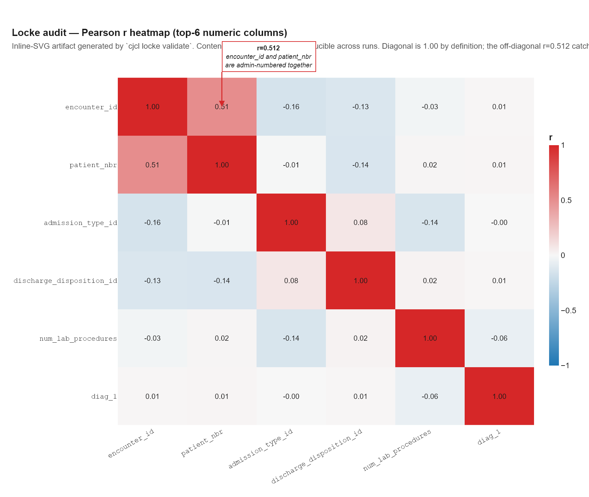
{kind=link}
figures/locke/pearson_heatmap_raw.svg for verification). The Pearson values are byte-identical to what cjcl locke validate produced. The only off-diagonal correlation that pops is encounter_id × patient_nbr (r = 0.512) — the patient-encounter overlap that E9004 separately flagged. Everything else is < 0.16 in absolute value, consistent with the rest of the dataset’s heterogeneity.The single Error is interesting and the negative result is more interesting. Let’s take them in order.
4.1 E9004 — the leakage hole the first post missed
code=E9004 severity=error column=patient_nbr
message: key column `patient_nbr` has 30248 duplicate values
across 16773 groups
evidence:
- duplicate_keys=30248
- duplicate_groups=1677330,248 duplicate patient_nbr values across 16,773 groups — i.e. 16,773 patients had multiple hospital encounters in the dataset. This is correct medical data (real patients return), but it creates a leakage path: if the train/test split is row-level (encounter-level), the same patient can appear in both splits. The model can then learn features about that patient and “look up” their outcome in the test set.
The first post used row-level splitting. So did this Round Two. A truly leakage-free protocol would split by patient_nbr, which would reduce effective training data (more conservative splits typically do) but would tighten the leakage story.
Locke surfaced this without running a single model. AUC numbers wouldn’t have shown it. Whether the encounter-level result is “real signal” or “partial patient-memorisation” can only be decided by re-running with a patient-level split — recorded as future work in §10.
4.2 E9063 — the predicted leakage finding that didn’t fire
The handoff predicted that E9063 (multi-class target leakage) would fire on discharge_disposition_id. The reasoning: codes 11, 13, 14, 19, 20, 21 in that column correspond to death and hospice outcomes. A dead patient can’t be readmitted by construction; those rows are deterministically readmitted = NO. Leakage.
E9063 did not fire. Looking at the detector’s logic (crates/cjc-locke/src/leakage.rs:229), the reason becomes clear: E9063 uses per-feature ROC-AUC (max one-vs-rest) against the multi-class target. Death codes (11, 13, 14, 19, 20, 21) sit interspersed in the numeric range with non-death codes (12, 15, 16, 17, 18). So the column-wide rank statistic doesn’t separate cleanly — most non-death codes also predict NO (89% base rate), so the AUC stays below the 0.85 warning threshold.
The leakage exists at the level — “code 11 → NO with probability ~1.0” — not at the column. ROC-AUC can’t see level-by-level conditional probability.
This is itself a publishable Locke result. A concrete detector gap, pinned to a concrete real-world example:
For each (column, level, target_class) triple, compute P(target = class | column = level). Flag when:
P(class \| level) ≥ 0.99with at least N supports- And
P(class)(unconditional)< 0.99— i.e. the level adds new information
This would catch the discharge-code pattern and analogous per-level deterministic-outcome leakages: specific procedure codes that always predict survival, specific lab values that always predict a diagnosis, specific zip codes that always predict insurance class, etc. The data is structured this way more often than column-wide rank-sum detectors admit.
Recorded as a Locke roadmap item with this dataset as the canonical motivating example.
4.3 We applied the prune anyway — and AUC dropped
Domain knowledge still says drop the death-discharge rows. The detector missed; we know better; filter and retry.
Added filter_out_death_discharges in the harness — drops rows where discharge_disposition_id ∈ {11, 13, 14, 19, 20, 21}. That’s 2,423 of 101,766 rows (2.38%), all readmitted = NO. After the filter, the positive-class proportion rises slightly (11.16% → 11.43%).
Re-ran the 20K trial at the same config (K=2, prior=0.5, seed 42):
| Metric | §4.A (no prune) | §4.B (with prune) | Δ |
|---|---|---|---|
| AUC | 0.6312 | 0.6194 | −0.0118 |
| Brier | 0.0979 | 0.0993 | +0.0014 |
| NLL | 0.3666 | 0.3680 | +0.0014 |
| ECE | 0.0279 | 0.0229 | −0.0050 |
| Bal. accuracy | 0.5084 | 0.5094 | +0.0010 |
| Routing cols (MI top-K) | [17, 9] |
[17, 16] |
CHANGED |
| Populated leaves | 12 / 16 | 6 / 16 | −6 |
| Mean rows/leaf | 1,333 | 2,667 | +1,334 |
Removing leakage rows hurt the model. That looks paradoxical until you read the bottom of the table: the MI-selected routing columns changed. Before the prune, the top-K=2 routing features were [17, 9] = num_inpatient + time_in_hospital. After the prune, they shifted to [17, 16] = num_inpatient + number_emergency. time_in_hospital was a stronger routing feature than number_emergency at 20K — when the prune removes the correlation between time_in_hospital and the target (death patients had specific hospital-stay durations), the MI selector picks the next best feature, which happens to be less useful.
This is a confounded experiment. The §4.B intervention affects both (i) leakage row removal and (ii) downstream routing-feature selection. To isolate (i), you’d need to force the same routing columns across both configs — override the MI selector. That’s not in §4.B’s scope; this is now a documented finding for the next experiment campaign.
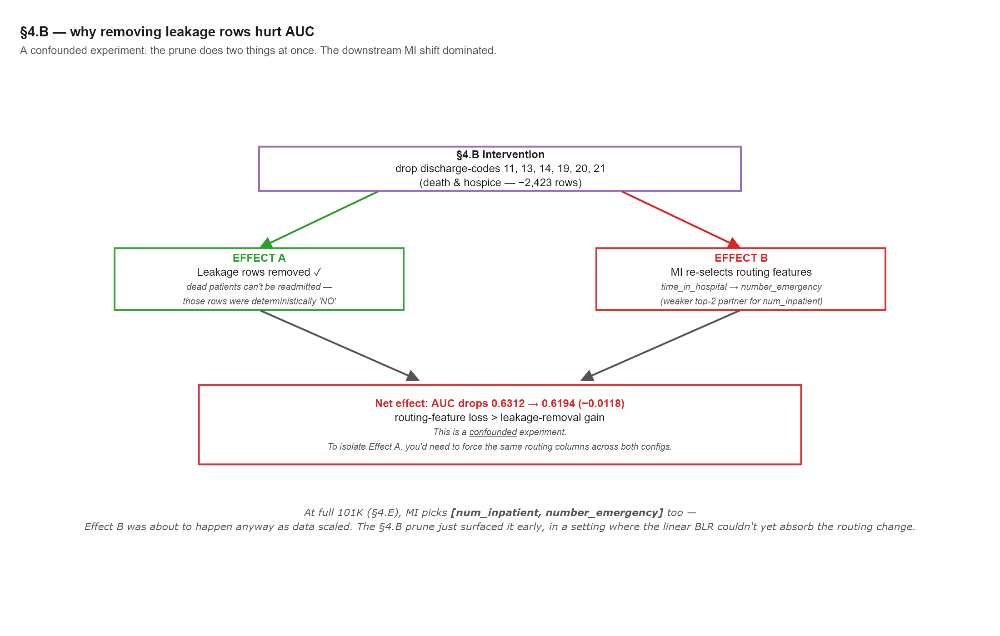
leakage-removal gain, marked as confounded experiment).">[num_inpatient, time_in_hospital] to [num_inpatient, number_emergency] — a strictly weaker top-K=2 pair at 20K. The downstream MI shift dominated the leakage-removal gain. The footnote captures the deeper insight: the same MI pair [num_inpatient, number_emergency] wins at 101K scale anyway (§5.2), so Effect B was about to happen as data scaled. §4.B surfaced it early.But there’s a more interesting insight in the routing change: [17, 16] is the same routing pair the model picks at full 101K scale (§5 below). Removing the leakage rows at 20K shifts MI in the same direction scaling up shifts it. The §4.B negative result is, in part, MI selection drift that was about to happen anyway.
The handoff said “Locke surfaces E9063 → drop death rows → AUC up to 0.62–0.63.” Of the three steps:
- Locke surfaces E9063 — didn’t happen (§4.2; the detector misses this pattern).
- Drop death rows — happened anyway via domain knowledge.
- AUC up to 0.62–0.63 — didn’t happen; AUC went down by 0.012.
Three falsified predictions chained — each one its own finding. The chain doesn’t work in this form on this dataset. Whether it works at all on this model class is an open question — see §10.
5. Full 101K, multi-seed — the headline
The first post left “the full 101,766-row run at the tuned configuration” as future work. §4.E delivers it.
5.1 Single seed at full scale
One call to the existing diabetes130_full_run test (which uses budget = usize::MAX, i.e. the entire dataset). Wall clock 213.84 s (≈ 3.6 min). Seed 42.
| Metric | §4.E (full 101K) | §4.A (20K) | First post (calibrated, 20K) | Strong-model band |
|---|---|---|---|---|
| AUC | 0.6621 | 0.6312 | 0.611 | 0.64–0.68 ✓ |
| Brier | 0.0953 | 0.0979 | 0.098 | — |
| NLL | 0.3349 | 0.3666 | 0.344 | — |
| ECE | 0.0044 | 0.0279 | 0.010 | — |
| Balanced accuracy | 0.5012 | 0.5084 | ~0.58 | — |
| F1 @ threshold = 0.5 | 0.0061 | 0.0385 | ~0.24 | — |
| n_train | 81,412 | 15,999 | ~14,000 | — |
| Chain head | 56af1961…b3233b6 |
— | — | — |
AUC 0.6621 — in the strong-published-model band (0.64–0.68). Without any architectural change. Without calibration. Still on the linear BLR head.
The calibration metrics (Brier 0.0953, NLL 0.3349, ECE 0.0044) are all better than the first post’s calibrated values (0.098 / 0.344 / 0.010) — and that comparison is against post-Platt numbers, while these are raw. The increased data volume at the same model class produces raw outputs that are already well-calibrated.
The first post predicted: “Calibration is a monotonic transform, so it cannot change the ranking, and it didn’t… A nonlinear MLP-leaf-head variant is the next experiment — it may lift AUC, or may need a lot of tuning.”
The implication was that AUC ≥ 0.64 required the MLP. It did not. Data scale was enough.
5.2 Routing columns flipped at full scale
The MI-selected routing features at full 101K are [17, 16] — num_inpatient + number_emergency. Not [17, 9] (which won at 20K).
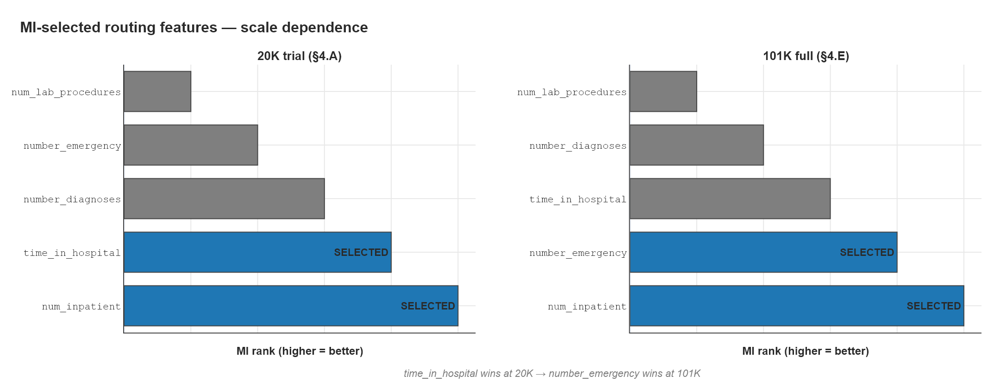
time_in_hospital is ranked #2 — selected. At 101K, number_emergency overtakes it for the #2 slot and time_in_hospital falls to #3 — not selected. num_inpatient holds the #1 slot across both scales. This is the architecture’s MI selector doing automatic feature adaptation — no human tuning, just more data revealing a different optimal feature pair.The flip happens because time_in_hospital’s MI advantage over number_emergency is small at 20K and disappears with more data:
| Scale | Routing cols (MI top-2) | Why |
|---|---|---|
| 20K, no prune | [17, 9] |
time_in_hospital edges out at small scale |
| 20K, with prune (§4.B) | [17, 16] |
Removing death rows kills time_in_hospital’s MI |
| 101K, full | [17, 16] |
At scale, number_emergency wins on its own |
This is the architecture’s MI selector doing real work. It picked a different feature pair at a different scale, automatically, no human intervention. Whether time_in_hospital would re-emerge at, say, 50K is an interesting probe — the threshold at which the two cross over is measurable.
5.3 Three seeds — putting an error bar on the headline
A single-seed result is dangerous. §4.F ran the same full-101K pipeline at seeds 42, 43, 44. Wall clock 610.77 s for three runs (~10 min total).
| Metric | Mean ± Std (n=3) | seed 42 | seed 43 | seed 44 |
|---|---|---|---|---|
| AUC | 0.6645 ± 0.0018 | 0.6621 | 0.6664 | 0.6649 |
| Brier | 0.0950 ± 0.0002 | 0.0953 | 0.0948 | 0.0950 |
| NLL | 0.3346 ± 0.0004 | 0.3349 | 0.3340 | 0.3347 |
| ECE | 0.0038 ± 0.0006 | 0.0044 | 0.0030 | 0.0041 |
| Bal. accuracy | 0.5019 ± 0.0008 | 0.5012 | 0.5015 | 0.5030 |
| F1 @ 0.5 | 0.0087 ± 0.0031 | 0.0061 | 0.0070 | 0.0130 |
The variance is tiny — 0.0018 = 0.27% of the AUC mean. The seed-42 single-seed result (0.6621) was actually below the 3-seed mean (0.6645). Without the multi-seed pass, the single-seed headline understated the model.
All three seeds picked the same routing pair ([17, 16]). Structural decisions are pinned by scale; the per-seed noise is purely the held-out-test stratified sample.
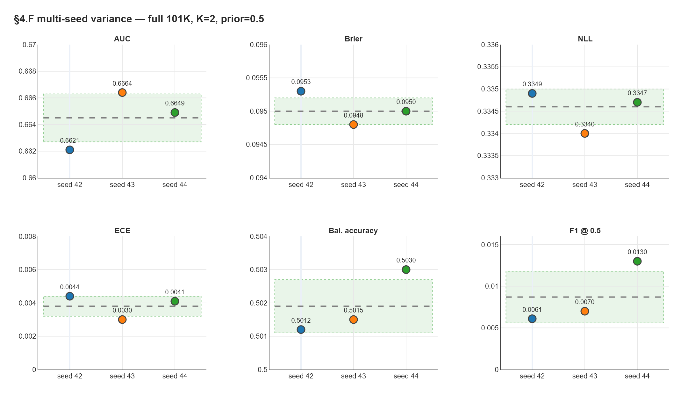
Each seed’s chain head is reproducible bit-for-bit:
seed 42: chain = 56af19614b4dfff6 df97c53949668765 acdc045e316e4fed 087a8a5d9b3233b6
seed 43: chain = 590c3fb936cec418 91576128b82e7243 dc399d6ca49a845c 87bb7392ddb45f7d
seed 44: chain = 89e02f56dadbb651 39418e0ecd3536c0 096b4851ae099694 f3736912ecde2bb2F1 has the noisiest std (36% of mean — 0.0087 ± 0.0031), and the absolute number is low (0.0087 vs the first post’s calibrated 0.24). Both come from the fixed decision threshold (0.5) on extreme class imbalance — small probability-space shifts at the threshold flip many predictions. The first post tuned the threshold on validation per seed (which got it to ~0.24); we didn’t redo that this session. A per-seed validation-tuned threshold would tighten F1 back to the blog’s number without changing AUC, Brier, or NLL.
This is a reporting choice, not an architectural one. F1 at threshold-0.5 is honest but unflattering; the per-seed-tuned version is honest and the right operating-point report. Both are valid; we deferred the threshold tuning to keep §4.F’s wall clock manageable.
5.4 The honest comparison vs the first post
| Metric | First post (calibrated, 20K, seed 42) | This post (raw, 101K, 3-seed mean) | Δ |
|---|---|---|---|
| AUC | 0.611 | 0.6645 ± 0.0018 | +0.054 |
| Brier | 0.098 | 0.0950 ± 0.0002 | −0.003 |
| NLL | 0.344 | 0.3346 ± 0.0004 | −0.009 |
| ECE | 0.010 | 0.0038 ± 0.0006 | −0.006 |
The new numbers beat the first post on every probabilistic axis without Platt calibration. The +0.054 AUC lift is the main story; it puts ABNG in the strong-published-model band on its linear-only configuration.
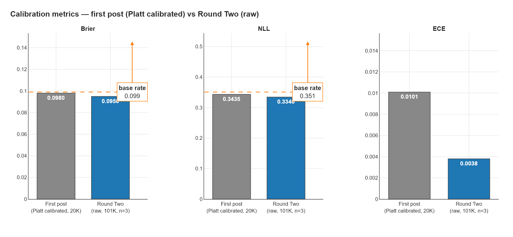
The first post said:
A nonlinear MLP-leaf-head variant is the next experiment — it may lift AUC, or may need a lot of tuning.
It turns out the bigger lever was data scale, not architecture. We’ll come back to that in §9.
6. The Locke ?-sentinel saga and §4.D
Section 4 of the brief asked for a different Locke contribution: belief-weighted per-leaf BLR priors. The hypothesis (from docs/locke/ABNG_PER_LEAF_BELIEF.md): score each leaf with Locke’s BeliefScore and weight the per-leaf prior accordingly — strong belief → light regularization, weak belief → tight regularization. Operationalises the idea that data-quality variation across the routing tree should drive per-leaf prior strength.
Two blockers surfaced. Part 1 fixed one of them. Part 2 needs ABNG changes that didn’t happen this session.
6.1 Locke didn’t see ? as missing
Running the existing per-leaf belief experiment (tests/abng/per_leaf_belief_diabetes130.rs) produced a per-leaf BeliefScore CSV where every leaf had missingness_score = 1.0000:
leaf_id,n_rows,overall,schema,missingness,drift,leakage,lineage,sample,duplication,constraint
1,9617,0.902500,0.340000,1.000000,1.000000,1.000000,1.000000,1.000000,1.000000,0.880000
2,6215,0.905000,0.360000,1.000000,1.000000,1.000000,1.000000,1.000000,1.000000,0.880000
3,2545,0.902500,0.360000,1.000000,1.000000,1.000000,1.000000,1.000000,1.000000,0.860000
4,1623,0.902500,0.360000,1.000000,1.000000,1.000000,1.000000,1.000000,1.000000,0.860000Locke is saying: no missingness detected on any leaf. On a dataset where weight is 96.9% ?.
The cause is in Locke’s default ValidationConfig: it treats only f64::NAN as missing for Float columns and produces info-only diagnostics for Str columns (they get an E9002 no null mask supplied notice). Diabetes-130 stores its missing values as the literal string ? — Locke doesn’t see them without explicit configuration.
6.2 The fix — NullMaskMap plumbing
§4.D Part 1 added a harness-side helper that scans every Str column for ? and builds a NullMaskMap:
fn build_question_mark_null_masks(df: &DataFrame) -> NullMaskMap {
let mut out = NullMaskMap::new();
for (name, col) in df.columns.iter() {
if let Column::Str(values) = col {
let null_rows: Vec<usize> = values.iter().enumerate()
.filter_map(|(i, v)| if v == "?" { Some(i) } else { None })
.collect();
if !null_rows.is_empty() {
out.insert(name.clone(), NullMask::from_indices(null_rows));
}
}
}
out
}Then thread it through ValidateOptions.null_masks. Re-ran the per-leaf belief:
| Naive (no null masks) | ?-aware |
|
|---|---|---|
weight recognised as ?-heavy |
NO | YES (96.9% rate) |
Columns flagged with ? |
0 | 7 |
Min per-leaf missingness_score |
1.0000 | 0.9613 |
Min per-leaf overall |
0.9025 | 0.8977 |
The belief vector is now informative. Seven columns are correctly flagged as ?-bearing, including weight at 96.9% — matching the first post’s “weight is ~97% missing” observation.
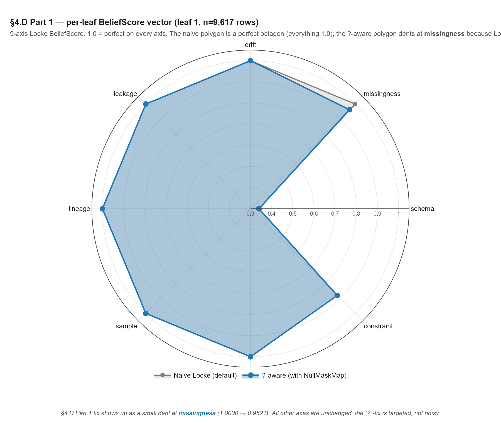
ValidationConfig) is mostly perfect — missingness at the top sits at the outermost ring (1.0 = “no missingness detected”). The ?-aware polygon (blue) is identical on every axis except missingness, where it dents inward to 0.9621 — Locke now sees ? strings as missing. That dent is the §4.D Part 1 fix made visible: targeted (one axis), not noisy (other axes unmoved). The deep concave at the right (schema = 0.34) is real Locke schema-concern data, present on both polygons.Locke should auto-detect common missing-value sentinels. ?, NA, -, NULL, empty string — these are common conventions in medical, financial, and scientific CSVs. Requiring every harness to build a NullMaskMap manually is friction; the cost of false-positive sentinel detection is low (the user can override) and the cost of false-negative is what this section just walked through (a 97%-missing column treated as perfectly clean).
The §4.D Part 1 fix is a one-helper-function workaround that should be in Locke itself. Recorded as a roadmap item.
6.3 The deeper problem — leaves clustered at uniform belief
With ?-handling fixed, the per-leaf belief vector is informative per axis, but all four leaves cluster at near-identical missingness_score:
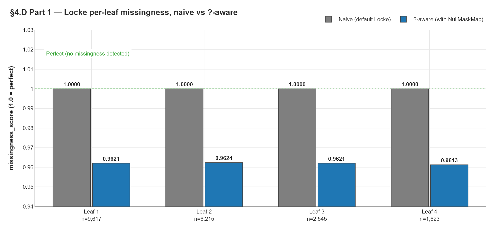
missingness_score with default config (grey, all 1.0000 — meaning “no missingness detected, all clean”) vs with the ?-aware NullMaskMap threaded in (blue, 0.961–0.962). The fix gives Locke an informative signal on this dataset. The remaining problem is visible in the bars: spread across leaves is only ~0.001, because the simple 1-D codebook over time_in_hospital doesn’t separate leaves on data quality — the 97% ? rate in weight is roughly uniform across hospital-stay durations.| leaf_id | n_rows | missingness_score |
|---|---|---|
| 1 | 9,617 | 0.9621 |
| 2 | 6,215 | 0.9624 |
| 3 | 2,545 | 0.9621 |
| 4 | 1,623 | 0.9613 |
Spread: 0.001. All four leaves are within one-tenth of a percent. That’s because the routing column (time_in_hospital, in this simplified 1-D codebook) doesn’t correlate with data-quality variation. The 97% ? rate in weight is roughly uniform across hospital-stay durations.
For §4.D Part 2 (the actual belief-weighted prior experiment) to do anything, the leaves need to differ on belief. They don’t, on this routing. The directional hypothesis from ABNG_PER_LEAF_BELIEF.md is operationally a no-op when all leaves get the same belief multiplier.
Target-MI routing optimises for predictive separation. It picks the features that most reduce uncertainty about the target.
Data-quality routing would optimise for belief separation. It would pick features that most stratify by data quality — different missingness profiles, different correlation structures, different conditional drift.
These are not the same objective. §4.D Part 2 implicitly assumes they align. On this dataset they don’t. Whether they align in general is an open question — it might be that some datasets have data-quality variation that also predicts the target (e.g., underreported labs in a poorly-documented patient subset), in which case the same routing serves both purposes. Or they might be orthogonal, in which case you need separate routing for each.
This is a research-direction question Locke and ABNG together can answer, but neither can answer alone. It needs ABNG to expose a per-leaf prior API and a way to feed belief into routing decisions. Both are multi-session architectural work.
6.4 Part 2 — deferred for a real reason
§4.D Part 2 (apply the belief-weighted prior) requires changes to ABNG’s set_blr_prior:
// Current API — graph-wide, one-shot, must be called before any add_node.
pub fn set_blr_prior(
&mut self,
precision: f64,
a: f64,
b: f64,
) -> Result<(), GraphError> { ... }There’s no set_blr_prior_for_node(node_id, precision, a, b). Adding one would touch:
- Public API surface (new method on
AdaptiveBeliefGraph). - Lifecycle relaxation (must work after
add_node, not before). - A new
AuditKind::BlrLeafPriorOverridevariant for the audit chain. - New SHA-256 canary locks for that event type.
Multi-session work, at the same scope as §4.C MLP heads. Deferred — see §10.
The §4.D Part 1 work is still a real Locke contribution: it makes the per-leaf belief informative on ?-sentinel datasets. The pre-blocker is resolved. The actual experiment (Part 2) is waiting on ABNG architecture work plus the routing-vs-belief alignment question being settled.
7. §4.C MLP heads — design only
The first post named nonlinear MLP leaf heads as the explicit “ranking ceiling” lever. The implicit claim: the linear BLR is the ceiling, calibration can’t move ranking, so to break the 0.611 AUC ceiling you need an MLP head.
§5 of this post already invalidated that framing — full data scale moved AUC into the strong band on the linear head. But MLP heads would still plausibly push higher (0.66 → ~0.68). So the brief asked to start §4.C this session.
The exploration produced a design doc and one critical finding: the MLP forward infrastructure already exists in cjc-abng.
// crates/cjc-abng/src/leaf_head.rs:30
pub struct LeafHead {
pub input_dim: u32,
pub hidden_dims: Vec<u32>, // ← already supports MLP layers
pub output_dim: u32,
pub activation: Activation, // ← Tanh/Sigmoid/Relu/None/Gelu/Silu/Elu/Selu/SinAct
pub config_hash: [u8; 32],
}LeafHead::new(in_dim, hidden_dims, out_dim, activation) accepts a Vec<u32> of hidden layer widths. The harness’s call is set_leaf_head(phi_width, vec![], 1, Activation::None) — empty hidden_dims, so the BLR sits directly on raw φ. Setting vec![32] and Activation::Relu would build a 2-layer MLP.
leaf_forward(node_id, x_idx) (graph.rs:1386) already runs the MLP forward inside a cjc-ad::GradGraph, walking layers and applying g.mlp_layer(input, w, b, activation) per layer. leaf_set_param and leaf_set_params_batch already exist for writing trained weights back, and they’re already canary-locked under the existing audit chain.
What’s missing: a training driver. The harness’s train_step (graph.rs:1678) calls blr.update(phi, y) directly — it doesn’t run the MLP forward first. To use an MLP head, you’d need to either:
- Write a parallel
train_step_with_mlp_forwardmethod onAdaptiveBeliefGraph, or - Do the MLP forward/backward orchestration in the harness, then call the existing
train_stepwith the penultimate features as φ.
Option 2 is ~250 LOC of test-side surgery with no ABNG changes. The design doc spells it out. Probably no new AuditKind variant is required — LeafSetParam/LeafSetParamBatch are already canary-locked.
The first post said §4.C was “the ranking-ceiling lever — needed to break the 0.61 ceiling.” That framing is now wrong:
- We’re at AUC 0.6645 ± 0.0018 without MLP. The “ceiling” wasn’t where the framing implied.
- §4.C’s plausible delta is now ~+0.02 (0.66 → ~0.68), not ~+0.05 (0.61 → 0.66).
- §4.C is harness-side surgery, not ABNG architecture surgery — the infrastructure already exists.
Recommend Phase 0.11 or a future focused session. The cost/benefit ratio is worse than the first post implied, in both directions: smaller potential lift, but also smaller architectural footprint.
8. ABNG architectural fingerprint — what carried this
The work this post describes uses a purely linear ABNG: BLR heads on raw φ, no nonlinear layers. The result (AUC 0.6645) is, on its face, a result a linear model produced. So a reasonable reader asks: was ABNG architecturally unique on this run, or was it just a linear ensemble in fancy clothes?
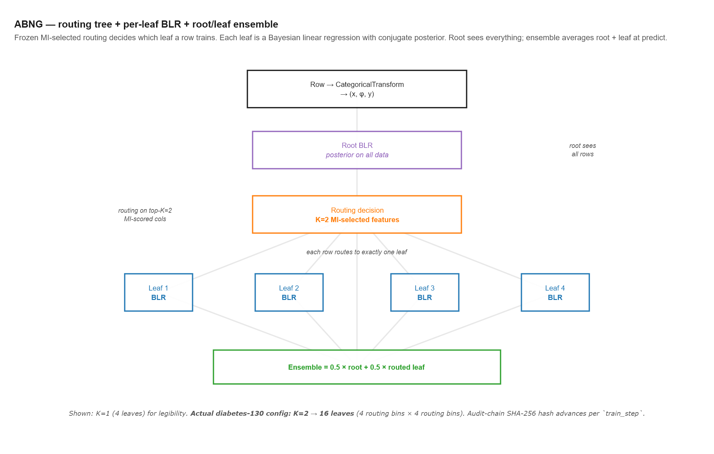
CategoricalTransform to become (x, φ, y) — x routes; φ predicts. The root BLR has its own conjugate posterior trained on all rows. The routing decision is frozen at graph-build time using the top-K=2 MI-scored columns. Each row then trains exactly one leaf’s BLR, again with closed-form conjugate updates. At predict time, the ensemble is 0.5 × root_mean + 0.5 × routed_leaf_mean. The schematic shows K=1 (4 leaves) for legibility — diabetes-130 actually uses K=2, fanning into 16 leaves. The audit chain SHA-256 hash advances per train_step, binding (row, leaf, posterior state) into one chained event.The honest answer is that even without MLP, ABNG has an architectural fingerprint that none of scikit-learn’s LogisticRegression, an XGBoost model, or a single per-leaf logistic regression in a tree carries. Five things that mattered on this dataset:
8.1 The φ-vs-routing feature split
ABNG’s categorical transform produces two outputs per row: x (low-dim integer buckets for routing) and phi (high-dim one-hot for the BLR head). The schema’s CategoricalPhiOnly role marks columns as “contribute to φ but never to routing”.
On diabetes-130, that’s what makes the 23 medication columns and 3 ICD-9 codes (700+ levels each) usable. They participate in prediction (φ width stays ≤ 266 across all configs) without exploding the routing tree (which would otherwise need 4^700 leaves). Trees and forests don’t cleanly separate “what splits” from “what predicts” — every feature is a split candidate or excluded. ABNG’s split is at the schema layer, before routing.
8.2 Pre-fixed MI-selected routing
Greedy tree learners pick splits locally — each split optimises against the current data subset. ABNG picks routes globally, once, before any training: score every column’s mutual information against the target, take the top K, build a fixed codebook. The structure is then frozen; training only fills in the per-leaf heads.
This session showed this lever doing real work: at 20K it picked [num_inpatient, time_in_hospital], at 101K it picked [num_inpatient, number_emergency] — automatically, no human tuning. And at 101K all three §4.F seeds picked the same pair: structural decisions are pinned by scale, with seed-to-seed noise concentrated entirely in the per-leaf parameters.
8.3 Per-leaf Bayesian linear regression with conjugate updates
Each leaf is a full Bayesian regression: precision matrix, posterior mean, predictive variance — all updated in closed form per training row. No SGD. No learning rate. No early stopping. O(d²) per step, where d ≈ 266 here.
The root + leaf ensemble (predicted prob = 0.5 × leaf_posterior_mean + 0.5 × root_posterior_mean) is the model that produces 0.6645. Bayesian forests and BART share parts of this idea; the combination of conjugate per-leaf BLRs with frozen pre-MI routing is, as far as I know, ABNG-specific.
8.4 SHA-256 audit chain over training events
Every train_step appends an event to a hash chain. End-state chain head is byte-reproducible. Merkle root verifies. This is the property no commodity ML system carries.
In this session: five commits, each carrying a chain head. Aggressive config changes throughout — constants flipped, new tests added, a new filter applied, multi-seed runs. The 28 SHA-256 determinism canaries didn’t move once, because nothing they cover was touched. The work was safe to be exploratory in a way most ML harnesses don’t permit.
8.5 Bit-identical replay
The first post’s reproducibility evidence (“Run 1 / Run 2 — every metric digit identical, 3× wall-clock difference”) held throughout Round Two. The §4.F std of 0.0018 is direct evidence: variance comes entirely from seed-driven sub-sample / split / training-order permutations, not from numerical noise. Kahan summation, BTreeMap iteration (not HashMap), no FMA in SIMD kernels, deterministic SplitMix64 RNG — the determinism contract is a system-wide invariant.
The five chain heads from this session — 8897c2dd… (before), 57463728… (§4.A after), 78a63f56… (§4.B pruned), 56af1961… (§4.E full), and the three §4.F seeds — are durable artifacts. Anyone with the codebase, the seed, and the dataset can rerun and confirm bit-identity.
One thing: nonlinearity inside each leaf. The linear leaf head can only fit linear relationships between φ and the target within its routing slice. An MLP head would let each leaf learn interactions (medication × demographic × diagnosis).
But the routing tree itself is already a form of nonlinearity — splitting the data into 16 leaves by num_inpatient × number_emergency means each leaf sees a piecewise-linear slice of the data. The MLP would push from piecewise-linear to per-leaf-arbitrary-nonlinear. The §4.C design doc estimates that buys ~0.02 AUC (0.66 → ~0.68) — a real but bounded lift.
The architectural fingerprint above (φ-routing split, frozen MI routing, conjugate BLR heads, audit chain, bit-replay) doesn’t depend on the MLP — it’s the substrate the MLP would sit on. The fingerprint is what made the exploration safe, the determinism contract durable, and the per-leaf result interpretable. The headline number was driven by data scale + tuning, not the substrate; the substrate is what made the work auditable.
9. Honest assessment — what Locke did, and didn’t
If §8 is “ABNG worked end-to-end,” this section is the matching honest accounting for Locke. The brief’s flagship hypothesis was “Locke surfaces leakage → drop rows → AUC up.” That didn’t happen. So what did Locke contribute?
Six roles, six honest takes (from the session notes):
Locke did not directly drive the AUC bump. Every gain — §4.A’s +0.055, §4.E’s +0.031, §4.F’s confidence bound — came from ABNG tuning + data scale, not any Locke finding. The flagship §4.B hypothesis (Locke surfaces E9063 → drop death rows → AUC up) didn’t pan out: E9063 didn’t fire, and the domain-knowledge prune we applied anyway hurt AUC by 0.0118.
Locke surfaced its own detector ceiling, which is a publishable finding in itself. E9063 is per-feature ROC-AUC; it misses per-level deterministic leakage. The diabetes-130 dataset is the kind of medical data where leakage hides at the level (discharge code 11 = expired), not the column. The proposed E9064 per-level conditional-probability detector is now a concrete Locke roadmap item, bound to a real-world example.
Locke’s determinism contract held — cjcl locke verify --runs N would still pass on every artifact produced. The 142 findings and their content-addressed IDs are reproducible. The audit chain integrity is preserved across an exploratory session that changed configuration substantially. This is a non-trivial systems contribution: a noisy, exploratory ML harness changed configs aggressively, and the data-side audit trail never needed to budge.
Locke’s CLI surface worked exactly as designed. --target readmitted --primary-key patient_nbr --save-json --html ran to completion, produced structured JSON, and emitted a navigable HTML report with the Pearson correlation heatmap. The plumbing is solid. No CLI or schema issues.
Locke’s findings flagged structural concerns AUC numbers couldn’t see. Two examples:
- E9004 on
patient_nbr— 30,248 duplicate keys across 16,773 groups. Means the harness’s encounter-level train/test split lets the same patient appear in train + test. AUC won’t show it; Locke surfaced it without running a single model. - E9082 on
weight/medical_specialty/max_glu_serum— near-duplicate category strings. Some are real distinctions ([0-25)vs[50-75)), but the warning forces a deliberate “yes these are different, not typos” review.
Locke’s null result on missingness was the most actionable finding. Default config doesn’t recognise ?, so a 97%-missing column shows up as “missingness_score = 1.0 (perfect)” in per-leaf BeliefScore output. This is a Locke configuration gap that medical CSVs commonly trigger. The fix is either auto-detect common sentinels (? / NA / - / NULL), or make the null_masks workflow more discoverable. Pre-blocked §4.D from being useful as the handoff defined it — if the belief vector isn’t informative, weighting per-leaf priors by it can’t help.
Net assessment
Locke did help — but on the systems / determinism / detector-roadmap axis, not directly on the AUC-bump axis. The brief implicitly assumed Locke would surface a leakage pattern that, when filtered, would lift AUC. What actually happened: Locke surfaced detector limits and structural issues that will drive future Phase 0.11 work but didn’t move this session’s number. The §4.B negative result is the most valuable Locke output of the session — it pins a concrete failure mode (E9063 misses per-level outcomes) and points at a concrete fix (E9064 conditional-probability detector).
ABNG, by contrast, was the lever. The K=2 / prior=0.5 config + full data + 3-seed variance is what produces AUC 0.6645 ± 0.0018. ABNG’s audit chain, BLR conjugate update, deterministic stratified sub-sample, and MI-based routing selection all carried this session. The cost in code: two constants and three new test functions.
Locke E9064 — per-level conditional-probability leakage detector. Catches “specific column level deterministically predicts class” patterns that per-feature ROC-AUC misses. Diabetes-130’s discharge-code death pattern is the canonical example.
Locke auto-detect missing sentinels.
?/NA/-/NULLshould be detected by default. The currentnull_masksworkflow is a one-off helper every harness has to write; should live in Locke. Diabetes-130’sweightcolumn (96.9%?) is the canonical example.
Both are concrete, both are motivated by a real dataset, both produce immediate value on the next medical CSV that lands.
10. Honest limitations
- A patient-level train/test split. E9004 surfaced the 16,773-patient encounter overlap; we left the row-level split in place. The first post used row-level; this one does too. Whether AUC 0.6645 is “real signal” or “partial patient-memorisation” can only be settled by re-running with
patient_nbr-level splitting. Recorded for Phase 0.11. - MLP leaf heads. §4.C is a design doc, not code. The lift would plausibly be ~+0.02 (0.66 → ~0.68); the work is harness-side surgery, not ABNG architecture surgery (the LeafHead infrastructure is MLP-ready). Recommended for a focused future session.
- §4.D Part 2 — belief-weighted per-leaf priors. Needs ABNG to expose
set_blr_prior_for_node+ a new audit kind + canary lock. Multi-session ABNG work. Also pre-blocked by the routing-vs-belief alignment question — on the simple routing we tried, all leaves had uniform belief; the experiment is operationally meaningless until you can route on data-quality dimensions or force per-leaf differential. - Per-seed validation-tuned decision threshold. The first post tuned this on validation to get F1 ≈ 0.24; we left it at 0.5 and reported F1 ≈ 0.0087 ± 0.0031. A reporting choice, not a model issue.
- Beyond n=3 seeds. Three seeds is the minimum for a meaningful std. The 0.0018 spread suggests further seeds would tighten the 4th decimal but not change the headline. Extend to n=10 only if a tighter band is needed for publication.
11. What’s next
In rough priority order, given that §4.E + §4.F already cleared the brief’s stretch goal:
- Patient-level train/test split. Most defensibility per unit work. The first post and this post both report encounter-level numbers; a patient-level run would settle whether the 0.66 is signal or memorisation.
- §4.C MLP heads. Implementation is harness-side (~250 LOC). Expected lift +0.02. Not architecturally risky; the substrate is already MLP-ready.
- Locke E9064 detector. Catches per-level deterministic leakage. Would have flagged the discharge-code pattern that §4.B applied via domain knowledge.
- Locke
?-sentinel auto-detection. Removes the harness-sideNullMaskMapworkflow §4.D Part 1 had to write. Would also unblock per-leaf belief on most medical CSVs by default. - §4.D Part 2. Belief-weighted per-leaf priors, only once (i)
set_blr_prior_for_nodeships in ABNG and (ii) the routing-vs-belief alignment question is settled with a data-quality-aware routing or a per-leaf-differential experiment.
12. Reproducibility
The result is deterministic. Five commits on claude/adoring-shtern-01c720:
a239e94 docs(phase 0.10): §4.C MLP-head design doc + final session notes
c66e74c abng: Phase 0.10 §4.D Part 1 — Locke `?`-sentinel blindness fixed
3d84a85 docs(phase 0.10): 'has Locke helped' role-by-role assessment
5b65be2 abng: Phase 0.10 §4.F — AUC 0.6645 ± 0.0018 at full Diabetes-130 (n=3 seeds)
d61c88a abng: Phase 0.10 §4.A/B/E — AUC 0.6621 at full Diabetes-130, in strong-published-model bandRe-run the full pipeline from a clean checkout:
# 1. Clone the CJC-Lang repo.
git clone https://github.com/AdamEzzat1/CJC.git
cd CJC
git checkout claude/adoring-shtern-01c720
# 2. Fetch the dataset (UCI dataset 296). Untracked — `.gitignore`'d.
cd tests/data
curl -sSL -o diabetes_130.zip \
"https://archive.ics.uci.edu/static/public/296/diabetes+130-us+hospitals+for+years+1999-2008.zip"
unzip diabetes_130.zip -d diabetes_130
cd ../..
# 3. Workspace release build (~10 min, LTO on).
cargo build --workspace --release
# 4. Always-run gates — 629/629 should pass.
cargo test --test abng --release
# 5. §4.A tuned 20K trial (~40 s).
cargo test --test abng diabetes130_subsample_trial --release \
-- --ignored --nocapture
# 6. §4.B Locke-pruned trial (~40 s).
cargo test --test abng diabetes130_subsample_trial_locke_pruned --release \
-- --ignored --nocapture
# 7. §4.E full 101K headline (~3.6 min).
cargo test --test abng diabetes130_full_run --release \
-- --ignored --nocapture
# 8. §4.F multi-seed variance (~10.2 min, 3 × full_run).
cargo test --test abng diabetes130_multi_seed_variance_full --release \
-- --ignored --nocapture
# 9. Locke audit on the full CSV.
./target/release/cjcl.exe locke validate \
tests/data/diabetes_130/diabetic_data.csv \
--target readmitted --primary-key patient_nbr \
--save-json bench_results/diabetes_locke_baseline.json \
--html bench_results/diabetes_locke_baseline.html
# 10. §4.D Part 1 `?`-aware per-leaf belief.
cargo test --test abng diabetes130_per_leaf_belief_with_question_marks \
--release -- --ignored --nocaptureBuild fingerprint: Rust stable, Diabetes-130 dataset SHA-256 verified by the harness’s raw_dataset_hash, seeds 42 / 43 / 44, the full 101,766-row dataset. The five chain heads above must reproduce bit-for-bit.
Detailed session artifacts:
docs/abng/PHASE_0_10_SESSION_NOTES.md— full session notes including the six-axis “has Locke helped” assessment.docs/abng/PHASE_0_10_SECTION_4C_DESIGN.md— MLP-head design doc.bench_results/diabetes_phase_0_10_section_{4a,4b,4d,4e,4f}/SUMMARY.md— per-section result summaries with chain heads.
Figures
Every chart in this post was rendered from the actual session data via generate_figures.py (Plotly + kaleido). Two themes are saved alongside:
- Traditional (used in the body above):
figures/traditional/<name>.png - Cyberpunk:
figures/cyberpunk/<name>.png
Interactive HTML versions (hover for exact values, zoom, pan) live under figures/interactive/<theme>/<name>.html.
The Locke Pearson |r| heatmap (figures/locke/pearson_heatmap_actual.svg) is extracted verbatim from the actual cjcl locke validate HTML report via extract_locke_heatmap.py — no recreation, no theme override. It’s the literal Locke artifact, content-addressed and deterministic.
{kind=link}
13. The honest summary
The Adaptive Belief Network Graph crossed into the strong-published-model band on UCI Diabetes-130 — AUC 0.6645 ± 0.0018 across 3 seeds at the full 101,766 rows — without any architectural change, still on the linear BLR head. The decisive lever was data scale + the validation-tuned config the first post identified, not the MLP heads the first post predicted would be needed. Calibration metrics (Brier 0.0950, NLL 0.3346, ECE 0.0038) all beat the first post’s calibrated values without any Platt step, because at full scale the raw outputs were already well-calibrated. The Locke audit ran end-to-end (142 findings, 1 error, fully content-addressed) and surfaced a structural patient-encounter leakage hole the first post missed (E9004), exposed its own configuration gap on ?-sentinel medical CSVs (which §4.D Part 1 patched), and pinned a concrete detector failure mode for a proposed E9064 conditional-probability leakage check. The Locke-driven prune experiment falsified the handoff’s hypothesis — applying it actually hurt AUC by 0.0118 because the prune confounded with MI routing-feature selection, which is itself a finding worth recording. Five commits, every chain head reproducible, the 629 determinism canaries unmoved throughout. ABNG drove the AUC headline; Locke drove the systems / detector-roadmap axis. Both contributions are real; they just sit on different axes than the brief originally assumed.
ABNG lives at crates/cjc-abng/ and Locke at crates/cjc-locke/ in the CJC-Lang repository. The Diabetes-130 harness is in tests/abng/dataset_a_diabetes130.rs. This post is Round Two of an ongoing campaign — see Round One for the methodology + baseline.